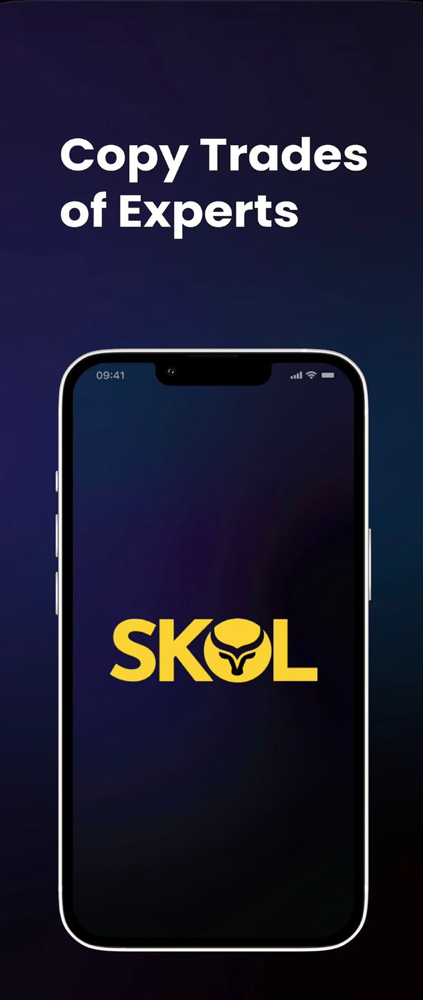
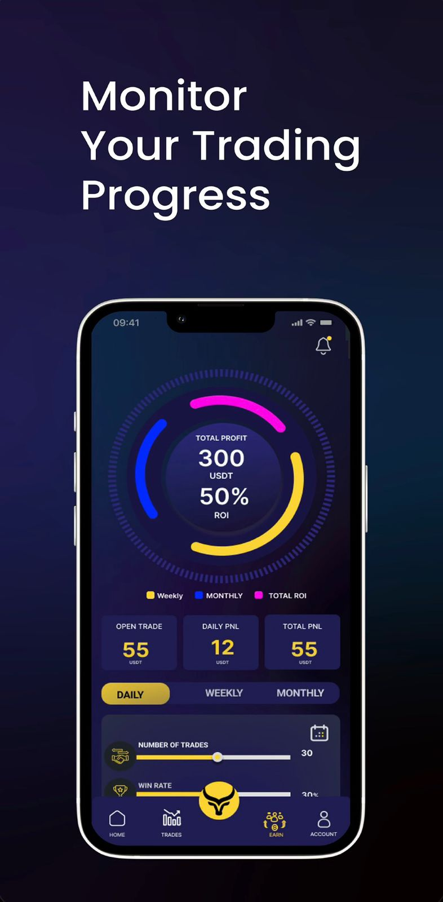
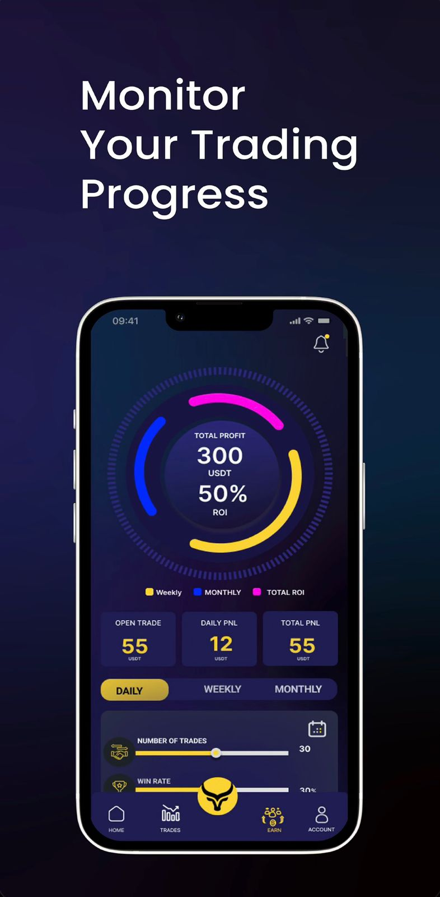

Professional Summary
I am a dedicated and detail-oriented Software Developer with a strong passion for building high-quality mobile and web applications. Over the past year, I have gained hands-on experience working with Flutter, Firebase, and modern development tools to create polished, user-focused digital products. I enjoy crafting clean UIs, designing smooth user flows, and implementing backend integrations that bring ideas to life.
Beyond development, I have had the opportunity to guide junior developers—helping them understand best practices, improve their coding logic, and grow steadily in their careers. I am always eager to explore new technologies and continuously improve both technically and creatively.
Areas of Expertise
Technical Skills: Flutter, Dart, Firebase, REST APIs, State Management (Riverpod/Provider), Python, Java, JavaScript, HTML, CSS, Git & GitHub
Soft Skills: Problem Solving, Communication, Collaboration, Time Management, Adaptability, Leadership, UI/UX Thinking
Professional Experience
Software Developer & Instructor (June 2023 – September 2024) – First Logic Institute of Technology, Kerala
In this hybrid role, I contributed to the development of multiple applications and also served as a mentor for students learning software development. I actively participated in project planning, UI design discussions, feature development, API integrations, and deployment processes. Working alongside other developers, I gained valuable experience in collaboration, task management, and building production-level applications.
As an instructor, I taught programming fundamentals and guided students through building their first real apps. This strengthened my ability to explain complex concepts in simple ways and improved my own technical understanding.
Projects
SKOL – Copy Trading Platform
SKOL is a high-performance copy-trading application built with Flutter. I designed and developed major parts of the interface and implemented the core trading functionalities. Users can connect with the Binance API, manage portfolios, and copy trades from top-performing traders.
My work included API integration, advanced state management, secure data handling, and UI polishing. I also optimized loading times and improved user flow to ensure a seamless trading experience.
 

First Logic Student Portal – Flutter Web
A complete web portal designed to enhance student engagement at First Logic. I contributed to building an interactive, responsive UI where students can access personalized learning modules, videos, and resources. The platform increased student interaction significantly and improved learning outcomes.
My responsibilities included UI component design, layout structuring, managing state across modules, and ensuring smooth performance on both desktop and mobile screens.
Petzify – Pet Marketplace App
Petzify is an e-commerce style mobile application for pets, accessories, foods, and related services. I implemented several core features, improved user interaction, and worked closely with designers to match UI expectations. My contributions helped increase retention and made the app more intuitive.
This project strengthened my skills in structured widget architecture, animations, Firebase storage, and responsive UI building.

.jpg)
.jpg)
Chess with Gemini – AI-Powered Chess Game
An intelligent chess application where users can play against a Gemini-based AI opponent. I implemented the game board mechanics, move tracking, and connected the logic with the AI engine. The goal was to create a challenging yet enjoyable experience for players of all levels.
This project boosted my skills in algorithmic thinking, game-state logic, and handling dynamic UI updates.
.png)
.png)
.png)
Certifications
Certified Full Stack Developer – American Board of Education
Education
Bachelor of Computer Applications – Amity University, India